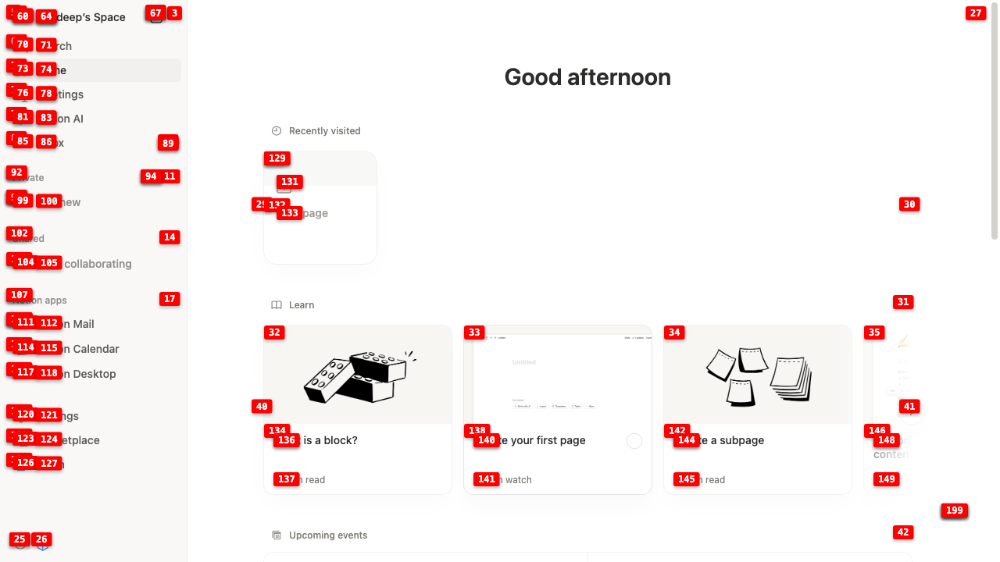
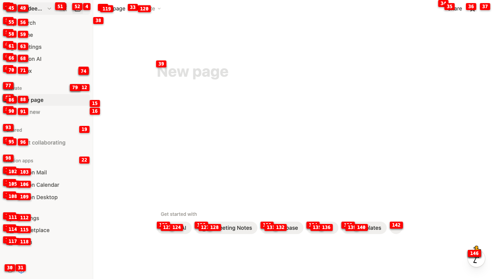
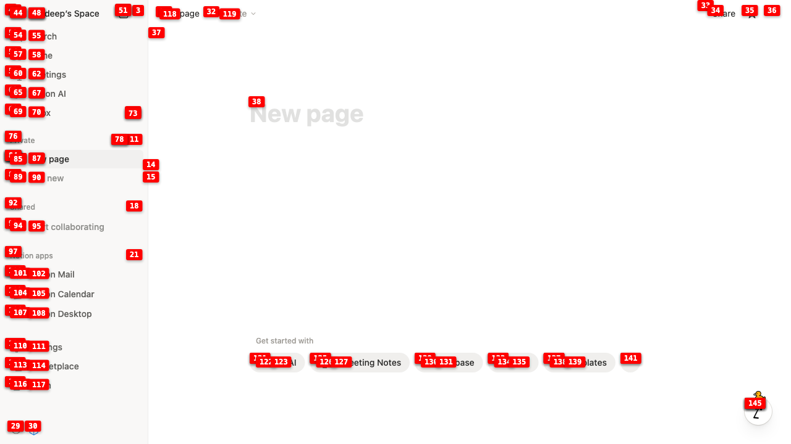
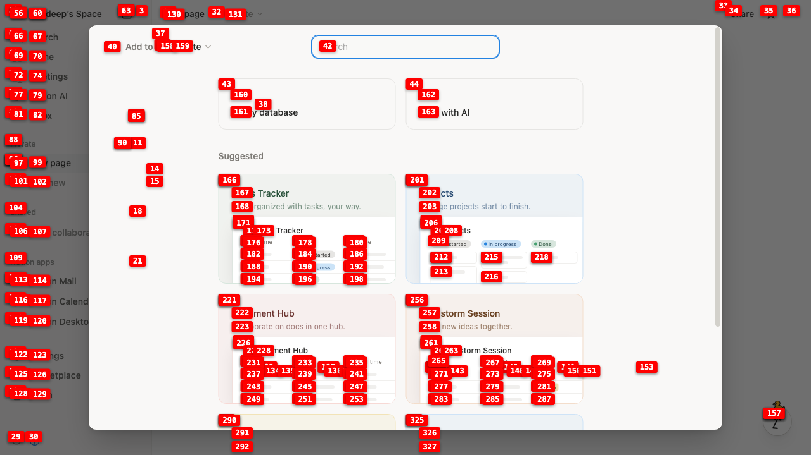

Make a database in notion
Total steps: 8
Step 1: Click the 'New page' button to start creating a new page where we can add a database
Step 2: Click on the content area to access database creation options
Step 3: Click on the Database template option to create a new database
Step 4: Click on the 'Database' template option to create a new database
Step 5: Click on 'Empty database' to create a new database in Notion
Step 6: Enter a name for the new database - 'My Project Database'